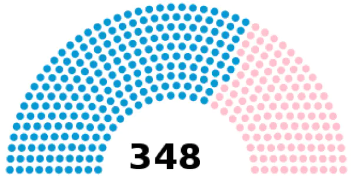
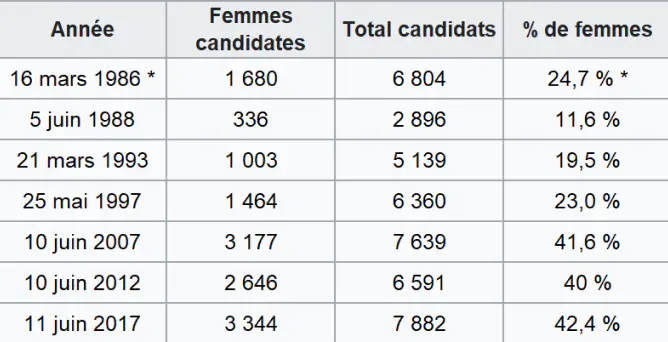

Marlène coulomb-Gully veut l’égalité entre les femmes et les hommes. En 2013,
elle est nommée au haut conseil à l’égalité entre les femmes et les hommes.
Elle a été nommée en raison de ses travaux de recherche sur l’égalité entre
les deux sexes. Son mandat a été renouvelé en 2016.
En 2020, elle rejoint l’observatoire de l’égalité du
Conseil supérieur de l’audiovisuel (CSA),
et en janvier 2017 elle a été nommée
Chevalier de la légion d’honneur
Une image de Marlène coulomb-Gully
Les femmes en politique
Marlène Coulomb-Gully essaye de montrer que les femmes en politique ne sont pas très présentes.
Elle affirme que le nombre de femmes en très haute position est très rare De plus,
maintenant il y a une loi qui oblige l’égalité du nombre de personnes participant à l’évènement politique.
Cette loi se nomme : « la loi de la parité
» voté en 2000. Cette loi oblige l’égalité des sexes pour participer à une élection. C’est à dire que si 5 hommes se présente, il faut donc avoir aussi 5 femmes qui se présente aussi.
Une image qui montre que les nombres de participants aux élections doivent être de 50/50
Cette loi fonctionne très bien dans un certain domaine. On sait aujourd’hui que les conseils municipaux des villes de plus de 1000 habitants ont une parité parfaite. Les conseils départementaux et régionaux ont aussi une parité parfaite.
Mais la loi de la parité n’est pas respectée dans tous les domaine politique. Par exemple, lors du vote du
Sénat ou de l’assemble nationale

Sénat français en octobre 2021 :
hommes : 226 sièges (64,9 %) ;
femmes : 122 sièges (35,1 %).

Un diagrame montre le nombre de participant au élection de l’assemblé nationale
On sait aussi que dans l’histoire de la 5eme république, il n’y a jamais eu de femmes présidente en France,
ni présidente du Sénat ou encore présidente de
l’assemble nationale.
En France, on compte juste une femme 1ère ministre sur plusieurs dizaines de 1ère ministre.
C’est Edith Cresson qui l’a été de mai 1991 à avril 1992 donc environ 10 mois.
Mais elle n’a pas pris de bonnes décisions, elle n’a pas été très populaire.
Edith Cresson avec le President de la 5e République Français Mitterrand
Aussi les femmes sont très peu présidentes de conseils régionaux et départementaux. Il y a aussi peu de femmes maires.
On voit qu’il y a un partage des places d’un certain nombre d’instances politique mais il n’a pas encore un véritable partage du pouvoir.
Micro Sidewalk :
Ce sujet vous intéresse et vous souhaitez en apprendre plus sur l’histoire du féminisme d’approches différentes . N’hésitez pas à consulter les autres projets en cliquant sur le bouton ci-dessous.